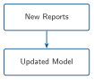
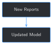
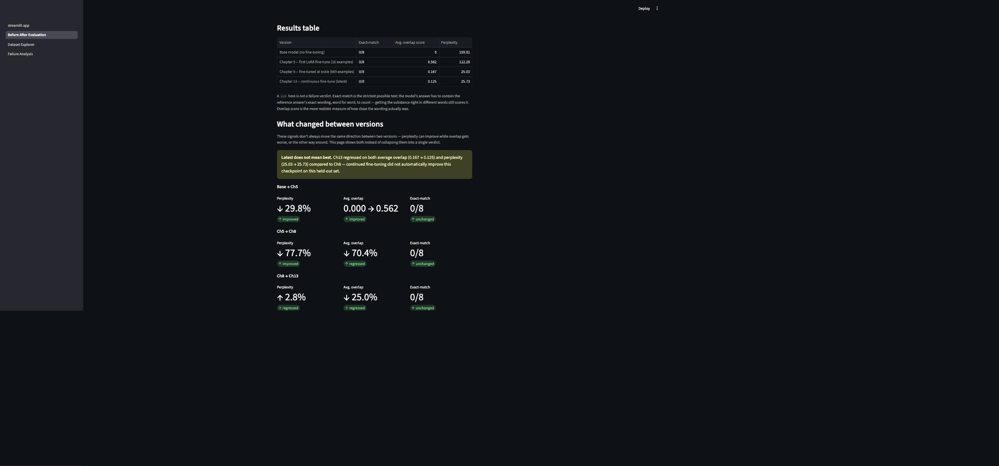

CUTOFF_REPORT_NUM = 60
def split_archive_by_cutoff(cutoff: int = CUTOFF_REPORT_NUM) -> tuple[list[dict], list[dict]]:
records = build_archive_records()
ok = [r for r in records if r["status"] == "ok" and r["file"] != HELD_OUT_REPORT]
current_reports = [r for r in ok if r["rpt_num"] < cutoff]
new_reports = [r for r in ok if r["rpt_num"] >= cutoff]
return current_reports, new_reports
current_reports, new_reports = split_archive_by_cutoff()
print(f"'Currently in production': {len(current_reports)} reports")
print(f"New reports just arrived: {len(new_reports)} reports")13 Continuous Fine-Tuning: Keeping the Model Current


Progress █████████████ 13 / 13 · Estimated time: 45-60 min · Difficulty: 🔴 Advanced
13.1 Learning objectives
By the end of this chapter, you will be able to:
- Simulate new reports arriving after a model is already in production, using a real chronological split of this book’s own archive
- Continue fine-tuning an existing checkpoint on just the new batch, reusing Chapter 8’s exact save-and-resume mechanism
- Run Chapter 12’s comparison harness on the result to decide whether an updated model is actually worth deploying
- Explain, from a real run, why “new data arrived” is not the same claim as “the new model is better”
13.2 Operational Problem
Sarah, the intervention engineer who first asked back in Chapter 9 whether she could trust an answer or still had to go find the PDF herself, has one last version of that question now that the book is almost done: “Everything we’ve built assumes the reports we have today. What happens when new ones come in next month — do we just retrain and swap in whatever comes out?”
13.3 Example: the same question this book has asked all along, one more time
Simulate exactly that. Split this book’s real, quality-gated archive by report number — reports before #60 stand in for “already in production,” reports #60 onward stand in for “just arrived” — train a model on the first group, continue training it on the second, and ask Chapter 12’s comparison harness whether the result is actually better:
NoteCurrent model vs. updated model, same held-out set both times
Current model: exact_match=0 avg_overlap=0.464 perplexity=25.92
Updated model: exact_match=0 avg_overlap=0.125 perplexity=25.73
Direction: exact_match=unchanged avg_overlap=regressed perplexity=improvedNew data arrived. Training ran without errors. Loss fell. And by one of this book’s own metrics, the result is a regression. This isn’t a hypothetical warning — it’s what actually happened the one time this book ran the full loop for real.
13.4 Theory
TipEngineering Translation: continuous fine-tuning
Continuous fine-tuning means updating a model again as new data becomes available, instead of training it once and leaving it fixed forever. It answers how to incorporate new data. It does not by itself answer whether the result should replace what’s currently running — that’s still Chapter 12’s job, run again on the new checkpoint.
13.5 Why “we retrained” isn’t the same claim as “it’s better”
The tempting shortcut this chapter exists to head off: new reports arrived, so retrain, and deploy whatever comes out, because newer data must mean a more current, more capable model. The Example above is the real counter-case — training completed cleanly, loss fell every epoch, and the resulting model still regressed on the same held-out set by avg_overlap. Retraining is a mechanical step. Deciding whether the result should replace what’s live is a separate decision, and it needs Chapter 12’s comparison, run again, every time — not assumed from the fact that training happened.
13.6 Implementation
13.6.1 Step 1: Split the archive by a chronological cutoff
13.7 What problem are we solving?
Simulate “new reports arriving” using this book’s own real archive, without touching the one report (#37) reserved as held-out everywhere else in this book.
13.8 Inputs
build_archive_records(Chapter 6),HELD_OUT_REPORT(Chapter 2)- A cutoff report number
13.9 Expected Output
Two lists of real report records: everything before the cutoff, and everything at or after it.
Running this exact code prints:
'Currently in production': 57 reports
New reports just arrived: 17 reports13.10 What just happened?
57 + 17 = 74 — every quality-gated, non-held-out report in the archive, split by report number into “before” and “after” a real cutoff. Report #37 never appears in either half, the same reservation every earlier chapter has respected.
13.11 Production Reality
This book’s archive stops in early January 2021 — there’s no genuinely new data to wait for. A production system would use the actual date a report was filed, not a chosen report-number cutoff, and the “new” batch would arrive continuously, a few reports at a time, not as one 17-report batch.
13.11.1 Step 2: Train the current model, then continue on the new batch
13.12 What problem are we solving?
Produce two real checkpoints — one trained on the archive as it stood before the cutoff, one continuing training on only the new batch — using Chapter 8’s exact checkpoint-and-resume mechanism.
13.13 Inputs
current_examplesandnew_examples, built with Chapter 7’s chunkertrain_with_checkpoints,save_checkpoint,load_checkpoint(Chapter 8), reused unchanged
13.14 Expected Output
Four checkpoints: two from training on the current archive, two more continuing on the new batch alone.
model, tokenizer = load_model_and_tokenizer(MODEL_NAME)
lora_model = build_lora_model(model)
train_with_checkpoints(lora_model, tokenizer, current_examples, held_out_eval_set, run_dir, logger, num_epochs=2)
current_checkpoint = run_dir / "checkpoint_2"
del model, lora_model
model, tokenizer = load_model_and_tokenizer(MODEL_NAME)
lora_model = load_checkpoint(model, current_checkpoint)
train_with_checkpoints(lora_model, tokenizer, new_examples, held_out_eval_set, run_dir, logger, num_epochs=2, start_epoch=2)
updated_checkpoint = save_checkpoint(lora_model, run_dir, epoch=4)Running this exact code prints:
epoch 1: avg loss 3.0296, held-out 0/8 (410s) -> checkpoint_1
epoch 2: avg loss 2.3672, held-out 0/8 (409s) -> checkpoint_2
epoch 3: avg loss 1.8747, held-out 0/8 (142s) -> checkpoint_3
epoch 4: avg loss 1.5092, held-out 0/8 (145s) -> checkpoint_413.15 What just happened?
Loss fell at every epoch, in both stages — training worked exactly as intended, on both the current archive and the new batch. checkpoint_2 is “currently in production”; checkpoint_4 is “the update after new reports arrived,” produced the same reload-from-disk way Chapter 8 already simulates a crash and restart. Nothing about this step signals a problem. That’s the point of Step 3.
13.16 Production Reality
Two epochs on 179 new examples is a small, fast update by design — a real production system might retrain more or less aggressively depending on how much new data has accumulated and how expensive a full retrain is. This chapter’s fixed 2-epoch continuation is a teaching choice, not a tuned production schedule.
13.16.1 Step 3: Compare before deciding to deploy
13.17 What problem are we solving?
Answer the question Step 2’s clean training run can’t: is checkpoint_4 actually an improvement over checkpoint_2?
13.18 Inputs
- Both checkpoints from Step 2, reloaded fresh from disk
load_version,summarize_version, andcompare_versions(Chapter 12), reused unchanged
13.19 Expected Output
A direction per metric between the current and updated model.
lora_current, tokenizer = load_version(current_checkpoint)
summary_current = summarize_version(lora_current, tokenizer, held_out_eval_set)
lora_updated, _ = load_version(updated_checkpoint)
summary_updated = summarize_version(lora_updated, tokenizer, held_out_eval_set)
print(f"Current model: {summary_current}")
print(f"Updated model: {summary_updated}")
print(f"Direction: {compare_versions(summary_current, summary_updated)}")Running this exact code prints:
Current model: {'exact_match': 0, 'avg_overlap': 0.464, 'perplexity': 25.92}
Updated model: {'exact_match': 0, 'avg_overlap': 0.125, 'perplexity': 25.73}
Direction: {'exact_match': 'unchanged', 'avg_overlap': 'regressed', 'perplexity': 'improved'}13.20 What just happened?
The same disagreement Chapter 12 found comparing two epochs of one run, and comparing two entirely different training regimes, shows up a third time here, on a genuinely new scenario: real new data, really incorporated. avg_overlap says this update made things worse. Perplexity’s “improved” label points the right direction but by a small margin — 25.92 -> 25.73 is about 0.7%, nowhere near the substantial, 6× gap Chapter 11 found between a base and fine-tuned model. Chapter 12’s own Production Reality warned that this comparison has no noise threshold; this run is a live example of why that matters: a real disagreement (avg_overlap) sits next to a real but minor “improvement” (perplexity), and only one of them is worth acting on.
This step’s loader is worth noticing too: it calls load_version (Chapter 12), not Step 2’s load_checkpoint (Chapter 8) — the two look interchangeable but aren’t. load_checkpoint sets is_trainable=True, which leaves the model in train mode, dropout included. That’s correct for resuming training in Step 2; loading a checkpoint the same way just to evaluate it would leave dropout switched on during scoring, making perplexity noisy from run to run for no real reason. Catching this meant literally checking model.training after loading — it printed True where it should have printed False, on the first attempt at this exact step.
13.21 Practical exercise
🟢 Beginner
Try it yourself: run python code/chapter_13/continuous_finetune.py from inside book/ (it takes roughly 20-25 minutes on CPU) and compare its printed output to the transcripts above.
You’ll know it worked when: you see avg_overlap: regressed in the final comparison, and you can explain in one sentence why that means this particular update shouldn’t be deployed without a closer look, even though training itself ran cleanly.
13.22 Field notes
WarningField notes: the new batch skews toward a different phase of the well
Query: what the 17 new reports (#60 onward) actually describe, compared to what the held-out evaluation report (#37) describes.
Result: 20 of the new batch’s 179 examples mention casing or cement — concentrated in the last several reports, right at the archive’s end (“Rig up and run 7” casing,“ “Cement 7” casing,“ ”Production Casing Wait on Cement”). The updated model’s memorized-sounding template shifts to match: “Production Casing Run Csg & Cement Rig up cementing equipment,” replacing the current model’s “Production Drilling Cond Mud & Circ Circulate for temperature.” Report #37, the held-out report this chapter still evaluates against, is from the middle of the well program — active drilling, not casing.
Why: a real well program drills first and cases and cements later, near total depth. The new batch isn’t random new data; it’s disproportionately drawn from a later, different operational phase than the report this chapter evaluates against. Continuing training on it pulled the model’s default template toward casing/cementing language, which fits the new reports and doesn’t fit report #37.
Lesson: “the new data is real and relevant” and “the new data resembles what you’re evaluating against” are different claims. A drop in avg_overlap here isn’t a training bug — it’s an honest reflection of what the new batch actually contains, and exactly the kind of thing a human should look at before deciding whether report #37-style questions are still important enough to weight for, or whether the archive’s growing casing/cementing content means the evaluation set itself needs to grow too.
13.23 Challenge exercise
🟠 Intermediate
Challenge: this chapter’s evaluation set is still Chapter 11’s original 8 questions, all from report #37 — a report about active drilling, not casing. Build a second held-out check from one of the new batch’s own reports (held out from the “new” training set the same way #37 is held out from everything) and compare the updated model against it instead. A reference solution is at code/chapter_13/challenge/challenge.py — on a real run, holding report #65 (2020-12-23, 20 real examples) out of the new-batch continuation and evaluating against it afterward gives {'exact_match': 0, 'avg_overlap': 0.14, 'perplexity': 16.56}. Perplexity is noticeably lower here than either model scored against report #37 (~25.8) — the updated model finds a report from its own new batch’s operational phase less surprising than one from an earlier phase, even though avg_overlap stays just as low. Recency alone didn’t fix what changed; matching the evaluation report’s operational phase did more than matching its training era.
13.24 Key takeaways
- Training completing without errors, with loss falling every epoch, says nothing about whether the result should replace what’s in production. This chapter’s real run trained cleanly and still regressed on
avg_overlap. - The same metric-disagreement pattern Chapter 12 found comparing epochs, and comparing entirely different training regimes, showed up a third time in a genuinely new scenario — this isn’t a one-off quirk of one comparison.
- A regression is worth investigating, not just flagging: the real cause here was traceable to what the new reports actually contain, not a training bug.
- Perplexity moving in the “improved” direction by under
1%is not the same claim as the substantial,6×gap Chapter 11 found between a base and fine-tuned model. Direction alone, without magnitude, can overstate a trivial change. - A model left in train mode (dropout still active) scores noisily even in eval-only code —
load_checkpoint’sis_trainable=Trueis right for resuming training and wrong for scoring; catching it meant checkingmodel.trainingdirectly, not just distrusting a number that looked slightly different between runs.
13.25 Repository files
| File | Purpose |
|---|---|
code/chapter_13/continuous_finetune.py |
Splits the archive, trains a current model, continues training on new reports, and compares the result |
code/chapter_13/challenge/challenge.py |
Reference solution: evaluating against a held-out report from the new batch itself |
notebooks/chapter_13_explore.ipynb |
Interactive companion notebook |
CautionCHECKPOINT — Chapter 13
Tip✓ WHAT YOU BUILT
continuous_finetune.py — splits this book’s real archive by a chronological cutoff, trains a “current” model on one side, continues training it on the “new” side using Chapter 8’s exact checkpoint mechanism, and runs Chapter 12’s comparison to decide whether the result actually deserves to replace what’s running. On a real run, it doesn’t.
13.26 What can you do now that you couldn’t do before?
You can retrain a model on new data as it arrives, and — because you built Chapter 12’s comparison first — you can tell the difference between “we retrained” and “we improved,” instead of deploying whatever a clean training run happens to produce.
13.27 See it side by side
Every real checkpoint sitting in checkpoints/ right now — from Chapter 5’s first fine-tune through this chapter’s continuously-updated one — is something the book’s companion app (app/) can load directly, not a separate demo built beside this book. Its Model Playground puts the base and fine-tuned answers side by side on the same real prompt; Before vs. After Evaluation runs this book’s own metrics live across the full held-out set; Dataset Explorer browses the real training examples behind them; and Failure Analysis reruns the book’s own documented failure cases — including a real regression like the one this chapter just found — against whichever checkpoint you actually have. See app/README.md to run it; nothing in it is pre-recorded, so your own checkpoint may not reproduce this book’s exact numbers, and that difference is itself real information.

13.28 Suggested next step
This is the last chapter. Every tool in it runs on your own data, not just this book’s Utah FORGE archive: Chapter 6’s gate checks a new archive’s quality, Chapter 8 fine-tunes it at whatever scale it has, Chapters 9 and 10 add retrieval and a faithfulness check on top, Chapter 11 builds a real evaluation set from whatever you hold out, and Chapters 12 and 13 decide, honestly, whether a new version is actually worth deploying. The book’s own archive stops in January 2021. Yours doesn’t have to.